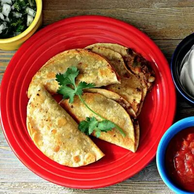

Beef Quesadilla

Description
This street food-style recipe combines red pepper, corn, and chipotle with canned or leftover beef hash for an
unexpectedly delicious dish. If you still need convincing, this dish doesn't have a single rating below five stars.
Ingredients
- 1 and 1/2 teaspoons olive oil
- 1/4 cup chopped red onions
- 1/2 red bell pepper, finely chopped
- 1/4 cup frozen corn kernels, thawed
- 1 serrano chile pepper, seeded and diced
- 15 ounces canned roast beef hash
- 1 canned chipotle chile in adobo sauce, minced, or more to taste
- 3 table spoons vegetable oil for frying
- 8 corn tortillas
- 1 cup shredded mozzarella cheese
- 1/4 cup chopped onion
- 1/4 cup chopped fresh cilantro
- 1 cup salsa
- 1/2 cup sour cream
Steps
- Heat a skillet over medium heat. Add olive oil. Cook and stir onions and red bell pepper until starting to soften, about 3 minutes. Add corn and serrano pepper; cook 2 to 3 minutes. Add garlic and cook 1 minute more.
- Reduce heat to medium-low. Add roast beef hash and chipotle pepper. Cook until the hash is heated and well mixed with the rest of the ingredients, about 2 or 3 minutes.
- Heat tortillas in a skillet, turning once, until they are soft and can be folded without breaking.
- Heat vegetable oil in a skillet over medium heat.
- Spoon 2 tablespoons of the hash filling and 1 1/2 tablespoons of mozzarella cheese on each tortilla. Fold tortillas in half. Fry in vegetable oil until quesadillas are golden and crispy, about 3 minutes on each side. Transfer to a paper towel-lined plate.
- Mix cilantro and onions together in a small bowl.
- Serve the quesadillas with salsa, sour cream, onions, and cilantro. Enjoy!